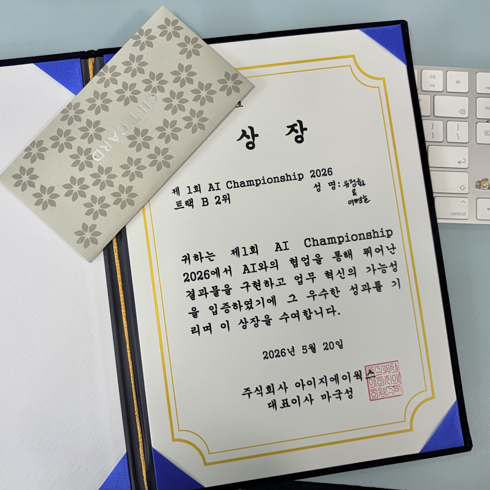
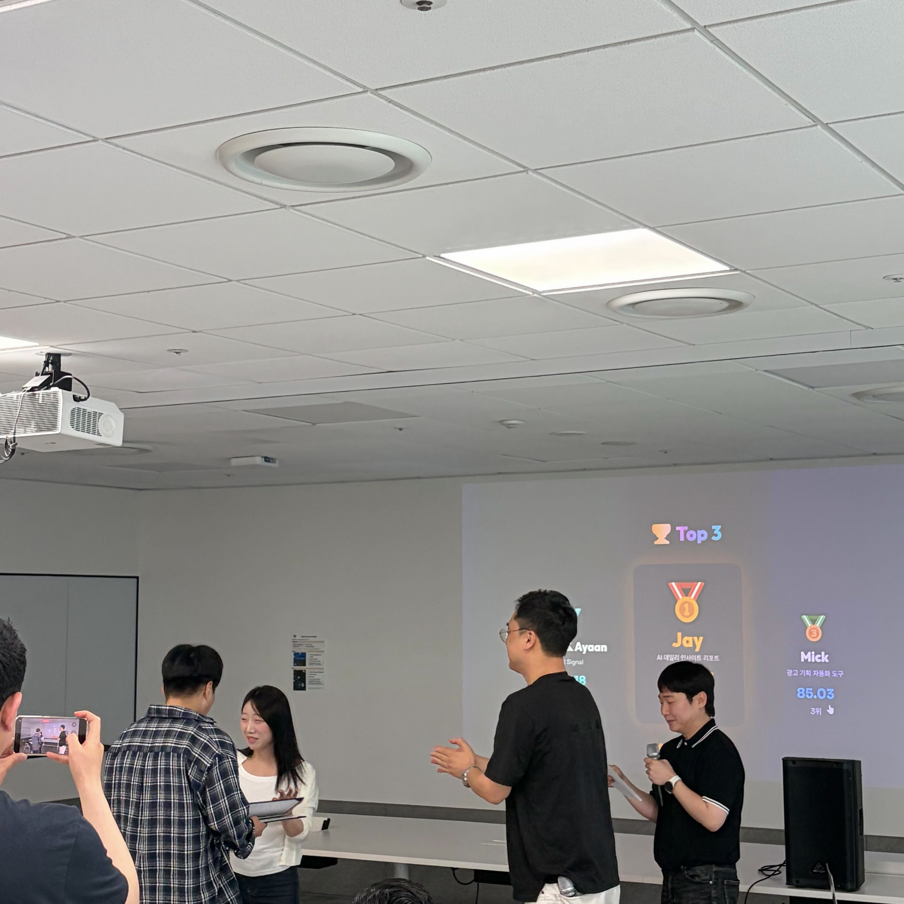

LIVE SERVICE
AWS Amplify 배포

MobileIndex Signal
자사 앱 데이터 + 외부 시그널 5종을 결합하여,
광고 집행 최적 타이밍을 판단하는 인텔리전스 플랫폼입니다.
AI Championship S1 · 1차 평가 1등 · 최종 2등 · 총 34팀
 배달의민족
배달의민족
같은 시점, 같은 데이터 — 다른 결론
Before — 5개 도구 · 따로 본 5개 수치
MobileIndex
배민 MAU 전주 대비 −5%
자사 대시보드
어제 ROAS 218%
기상청
다음 주 평균기온 +27℃
검색 트렌드
"배달" 검색량 +18%
뉴스 · SSP
쿠팡이츠 광고비 −22%
?
감으로 집행 강도 결정 · 매일 1시간+
After · MI Signal하나의 브리핑 · 하나의 판단
AI 집행 판단
월 · 09:00
집행 적기입니다.
경쟁 공백과 수요 급증 신호가 일치합니다.
기온 +27℃ + 연휴 — 배달 수요 피크 진입
검색량 +18%, 쿠팡이츠 −22% — 수요↑ × 경쟁↓
DMP 이탈 ADID 풀 — 전환 가능 타겟 확보
→ 캠페인 초안 자동 생성
타겟 · 예산 · 기간 · 매체 · TW360
Q&A
감사합니다.
MI Signal · Hazel.유정화 (PD) · Ayaan.이현호 (FE)

